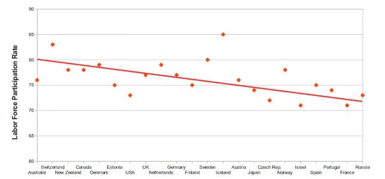

Question 1
Voting and Registration by Education in United States, 2016
Question 2
Nolan Chart
Question 3
Literacy Rate in India
Question 4
Labor Participation Rate in OECD Countries
OECD is an intergovernmental economic organization with 35 member countries.
Question 5
1. Based on the table, what is the relationship between level of education and participation in the electoral process?
2. According to the Nolan chart, what political philosophy believes strongly in the importance of both personal freedom and economic freedom?
3. According to the graph, what type of person in the Indian population is most likely to be literate?
4. Based on this graph, how might the correlation between economic freedom and labor force participation be categorized?
5. Which of the following best describes Romanian emigration to Hungary from 2008 to 2012?